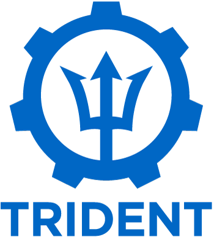
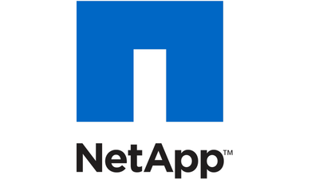

This Apache web server container was created by an Ansible playbook, and uses a persistent volume backed by NetApp using Trident.
Trident is a fully supported open source project maintained by NetApp. It has been designed from the ground up to help you meet the sophisticated persistence demands of your containerized applications.
Through its support for popular container platforms like Kubernetes and Docker, Trident understands the natural and evolving languages of those platforms, and translates requirements expressed or implied through them into an automated and orchestrated response from the infrastructure.
Today, that infrastructure includes our ONTAP (AFF/FAS/Select/Cloud), Element (HCI/SolidFire), and SANtricity (E/EF-Series) data management software, as well as the Azure NetApp Files service and the Cloud Volumes Service on AWS.
That list continues to grow.
Detailed documentation for Trident can be found on Read the Docs.